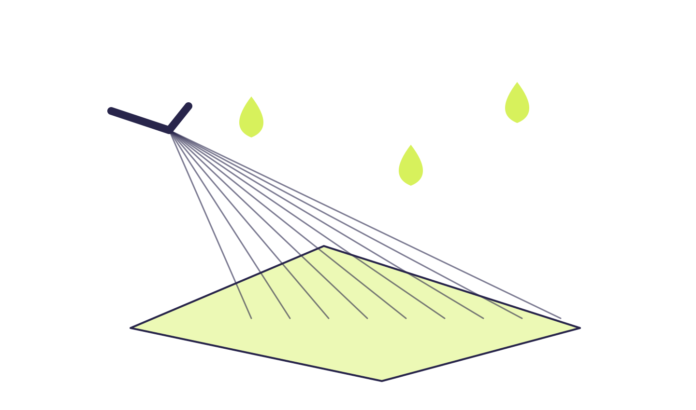
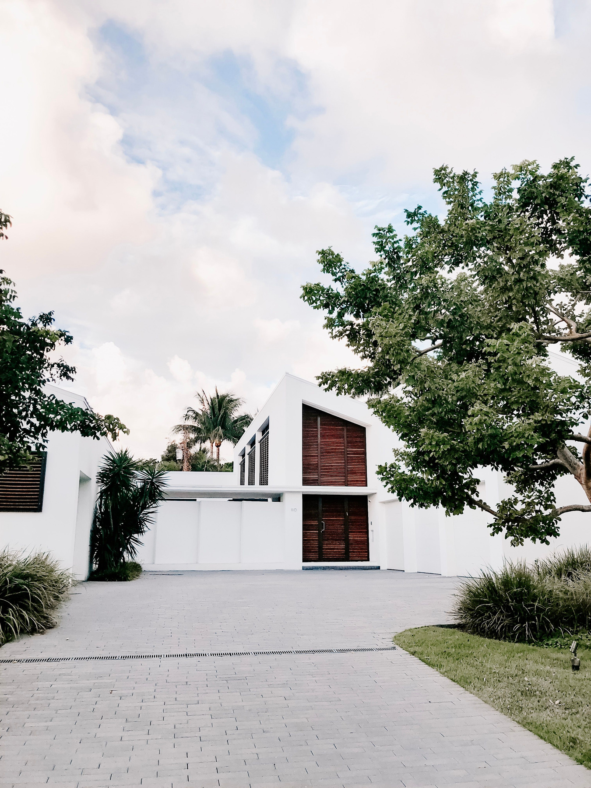
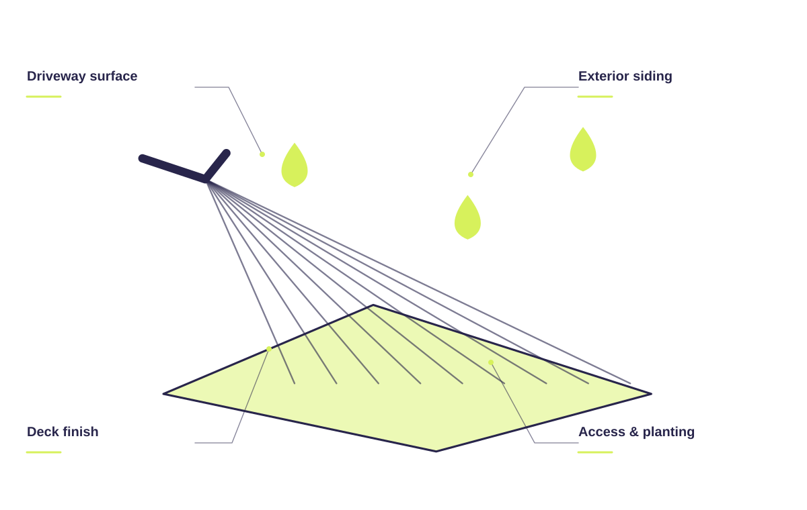
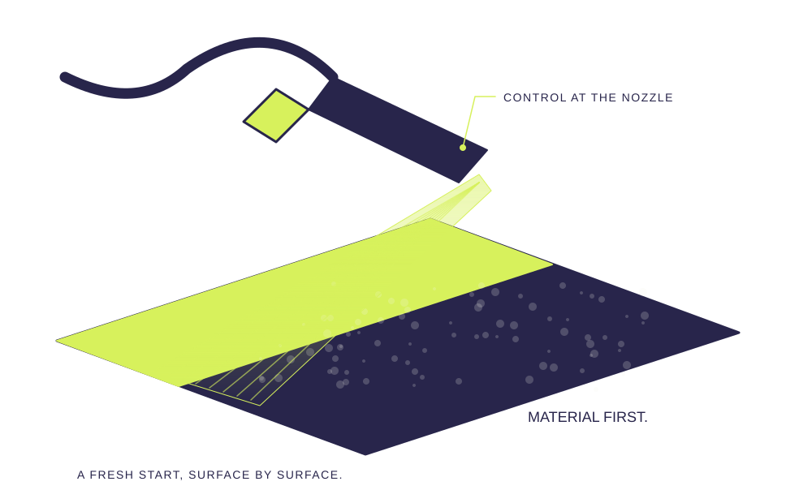
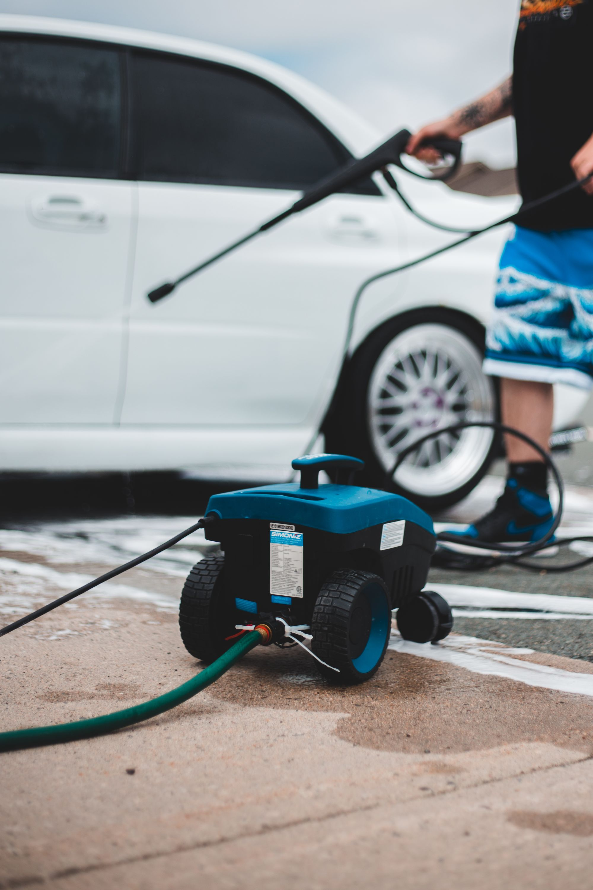
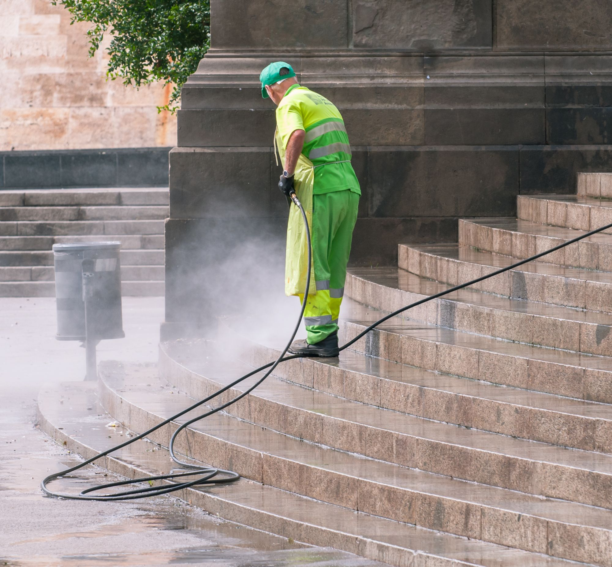
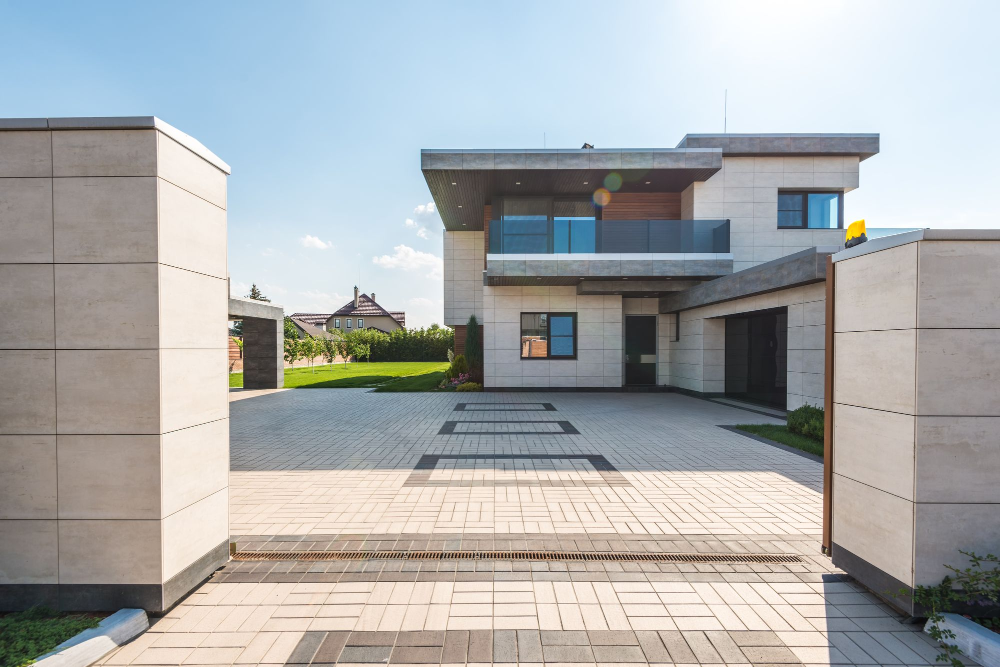
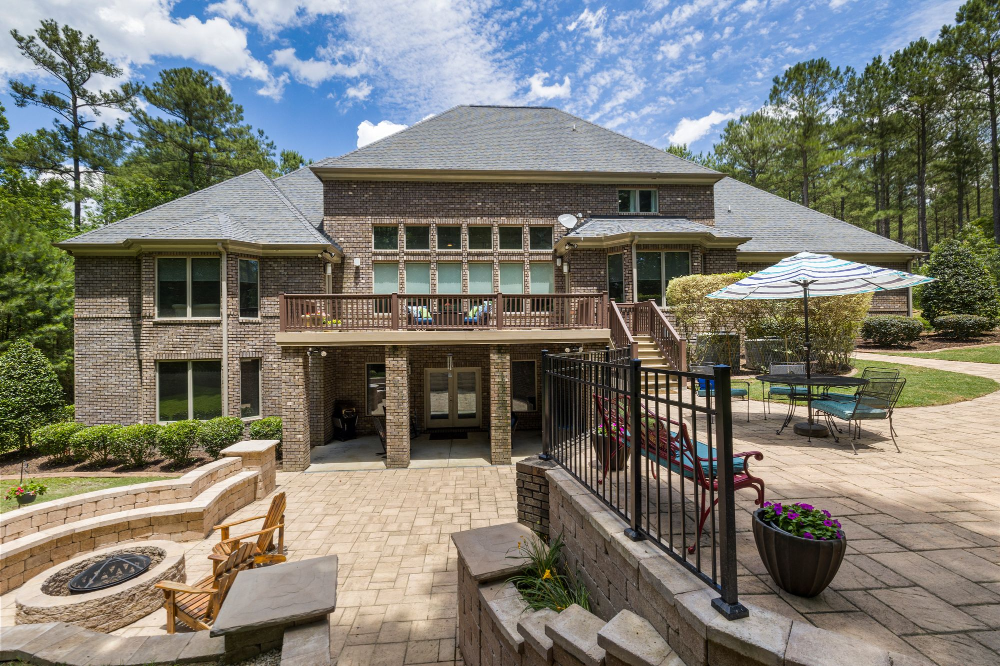
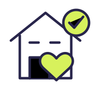
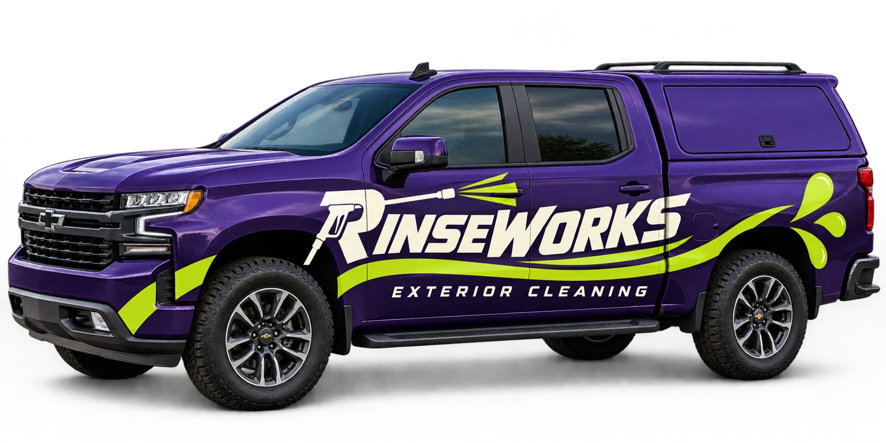

Driveways & paths
Lift the everyday buildup from your hard-working concrete.

Fresh driveways, brighter siding, and outside spaces worth stepping into.
Show us your surfaces ↗
A driveway, painted siding, and a timber deck do not need the same conversation. We build the brief around the material and the finish you want to look after.

RINSEWORKS / THE DETAILS MATTERTell us about the area, the material, and the buildup that concerns you. Photos help define the proposed clean.
Review the surface, adjacent planting, access, and the areas you want included.
Discuss the existing finish and the way the space is used so the scope reflects the property.


Different materials need different methods. We consider the surface, the condition, and the surrounding area before deciding how to clean it.



Send photos and tell us what needs a fresh start.
Review materials, access, and the surrounding areas.

A clean planned around the property.
When you get in touch, a little context goes a long way. These are the details that help us start a useful conversation about your pressure washing project.
Tell us what you have in mind ↗Tell us about surface material so the conversation starts with your situation.
A few details about area and condition help us understand what you need.
Share nearby planting when you get in touch, including photos where useful.
Let us know about access and water so the proposed scope reflects your priorities.
No. The cleaning method depends on the material, condition, and job requirements.
We’ll confirm which areas need to be clear before the visit so we can work safely and thoroughly.
Yes. Send the areas you’d like cleaned and we’ll prepare a scope for the full project.
